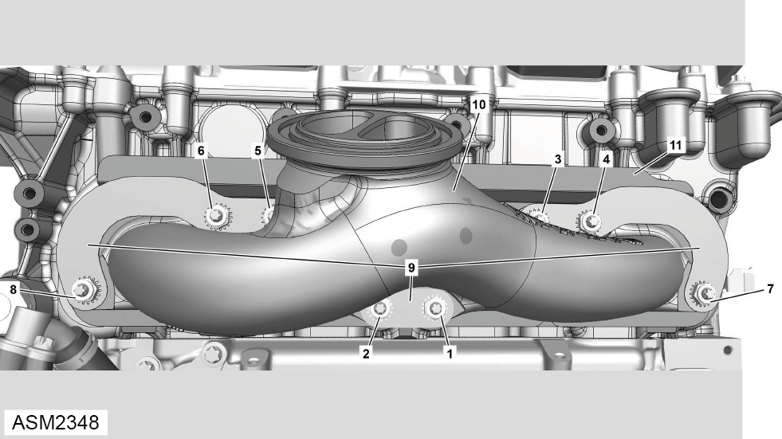

Exhaust Manifold - 4 Cylinder
Print
Operation Code: 40.21.01-02
Important Information
 WARNING: Allow the exhaust system to cool down before proceeding to prevent injury.
WARNING: Allow the exhaust system to cool down before proceeding to prevent injury.
Removal
- Remove turbocharger. Refer to procedure.

- Remove and discard lock washers (9) (x3).
- Remove and discard nuts (1 - 8) securing exhaust manifold (10) to engine.
NOTE: Remove nuts in reverse numerical order.
- Remove exhaust manifold.
- Remove and discard gasket (11).
Installation
- Installation is the reverse of removal procedure except for the following:
- Renew discarded gasket, nuts and lock washers.
- Install nuts and tighten by hand.
- Tighten nuts in numerical sequence. Torque 14 Nm.